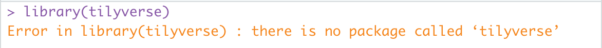

This article will explain how to install R, Rstudio, and R packages.
Please watch the video that gives an overview of using Rstudio, installing packages, and the Rmarkdown format.
Installing R
Download R from CRAN. Go to the CRAN homepage https://cran.r-project.org/. Select the link to download R for your operating system.
If you already have R installed, we recommend upgrading to the latest version of R by following the directions below
Windows
Go to CRAN, and click Download R for Windows. Next click the base link and select Download R-4.3.2 for Windows to download the .exe file. Open this file to install R.
MacOS
Go to CRAN, and click Download R for macOS. Under Latest Release there are two options available depending on which CPU is used in your laptop. Mac uses either Intel (x86) or arm64 (i.e. M1 or M2) processors. You can determine which type you have by clicking on the Apple menu and selecting “About this Mac”. Next to Chip or Processor, it will say either M1 or M2, if you have an arm64 CPU, or it will say Intel Core or similar, indicating you have an Intel x86 CPU.
Download the R-4.3.2-arm64.pkg for arm64 or R-4.3.2-x86_64.pkg for Intel x86. Open and follow the prompts to install.
Linux
If you are on linux, then follow the documentation for your linux OS.
Install Rstudio
Go to the Rstudio website and download Rstudio Desktop for your operating system
Once downloaded and installed, open up Rstudio to complete the rest of the tutorial.
Install compiler tools
Some R package installations may require a compiler, which is usually not available by default on Windows or macOS.
Windows
You need to install Rtools from CRAN. Follow this link to download RTools 4.3 using the Rtools43 installer https://cran.r-project.org/bin/windows/Rtools/ .
MacOS
To install the necessary compilers, we will follow the recommend steps outlined by CRAN: https://mac.r-project.org/tools/
Xcode
First you will need to install the Xcode command line tools. To do so open Rstudio and click on the “Terminal” tab, which is to the right of the “Console” Tab. Alternatively you can open the Terminal app directly from /Applications/Utilities/ or use the spotlight search tool, search for “terminal”, and open the Terminal App.
Type the following into the terminal and hit Enter:
sudo xcode-select --installWhen prompted for Password:, type in your macOS user password (you wont see any characters printed as you type), and press enter. Click “Install” in the pop up and agree to the license agreement (if you agree of course). This download will require ~9Gb of space so it will take some time to download and install. Verify the installation by typing into terminal:
gcc --versionWhich should print something similar to either this:
#' gcc (GCC) 4.8.5
#' Copyright (C) 2015 Free Software Foundation, Inc.
#' This is free software; see the source for copying conditions. There is NO
#' warranty; not even for MERCHANTABILITY or FITNESS FOR A PARTICULAR PURPOSE.or this:
#' Configured with: --prefix=/Library/Developer/CommandLineTools/usr --with-gxx-include-dir=/Library/Developer/CommandLineTools/SDKs/MacOSX.sdk/usr/include/c++/4.2.1
#' Apple clang version 13.0.0 (clang-1300.0.29.30)
#' Target: arm64-apple-darwin21.3.0
#' Thread model: posix
#' InstalledDir: /Library/Developer/CommandLineTools/usr/binHere’s a youtube video explainer that also shows the process.
gfortran
Next you need to install gfortran. If you’ve installed the most recent version of R (or at least 4.3.0), then you can install using the gfortran-12.2-universal.pkg.
Once you’ve run the gfortran installer the last step is to make sure that this program is in your PATH. This step will make the gfortran program visible to R, and other programs.
First determine which type of shell you have (typically bash or zsh). Execute the following in a terminal (click either on the terminal pane in Rstudio, or open the terminal app in macOS).
echo $SHELLIf you see /bin/zsh then make a plain text file called .zshrc in your home directory (e.g. /Users/Your-macOS-username/.zshrc), if it doesn’t already exist. If instead you see /bin/bash then make a file called .bashrc in your home directory, if it doesn’t already exist. You can use Rstudio to make a new plain-text file (File->New file->Text) or by opening up the Textedit app, then click Format->Make Plain Text.
Add the following line of text to the file (and keep any other text if already present).
export PATH=$PATH:/opt/gfortran/binSave the text file to your home directory. You may need to rename the file after saving to ensure that it doesn’t end with .txt. (e.g. rename .zshrc.txt -> .zshrc). This file will be a hidden file. Hidden files can be seen in the Finder app by pressing Command + Shift + . (period) to toggle on/off visualizing hidden files.
Close and reopen Rstudio.
Linux
You should have a compiler available already.
Installing the tidyverse and Rmarkdown packages
Now that you have R and Rstudio set up we will install packages.
Packages are extensions to the base R installation that provide additionally functionality to the language. In this course we will use packages from the tidyverse, which is a collection of packages commonly used for data science and interactive data analysis. Installing the tidyverse package will install an entire collection of tidyverse packages.
CRAN is the official R package repository. CRAN has 18,000+ packages, including the tidyverse packages. Packages from CRAN are installed using the install.packages() R function. A successful install of a package will only need to be done once, until you update R to a new version.
Open Rstudio to launch R. Then in the console pane, execute the following command to install the tidyverse:
install.packages("tidyverse")
This command will take a few minutes to run while all of the packages are installed. Package installation will be completed once the > prompt reappears. Once complete, test package installation by loading the package(s)
library(tidyverse)If successful you will see something like this:

An error will look like this (note misspelled package name for demonstration purposes):

If loading tidyverse completes without errors then the packages have been installed. You’ll also now see additional packages (ggplot2, dplyr, tidyr) listed under the “Packages” pane.
If there is an error installing tidyverse, you’ll likely see the following at the end of the command:
#' Warning in install.packages :
#' installation of package ‘tidyverse’ had non-zero exit statusIf this happens, contact the course instructors to help troubleshoot the installation issue.
Another package that we will use in the course is rmarkdown, to install run:
install.packages("rmarkdown")and verify installation by running library(rmarkdown)
Introduction to using Rstudio and Rmarkdown
Now that you have installed R and Rstudio, please watch this video (~20 minutes) that provides an overview of how to use Rstudio IDE and an introduction to the Rmarkdown format.
(Appendix) Installing packages from other sources
There are 2 additional commonly used repositories for R packages. These are not needed to complete the prerequisite but are useful resources that you will use as you perform more coding in R.
- Bioconductor is a repository that hosts 2,000+ bioinformatics related packages.
To install bioconductor packages you should use the CRAN package BiocManager. BiocManager has a function called install() to install bioconductor packages. For example to install ComplexHeatmap
install.packages("BiocManager")library(BiocManager)
install("ComplexHeatmap")
# or equivalently you could run BiocManager::install("ComplexHeatmap")- Github hosts open-source code from millions of software projects. R packages hosted on github can be installed using the
remotespackage. Packages on github are generally the development version of a package, or a package that has not been contributed to either CRAN or Bioconductor. To install you’ll need to find the organization name and the repository name on github to install.
For example to install the LaCroixColorR package:
install.packages("remotes")
remotes::install_github('johannesbjork/LaCroixColoR')
# or equivalently you could use BiocManager, which uses remotes internally
BiocManager::install(`johannesbjork/LaCroixColoR`)